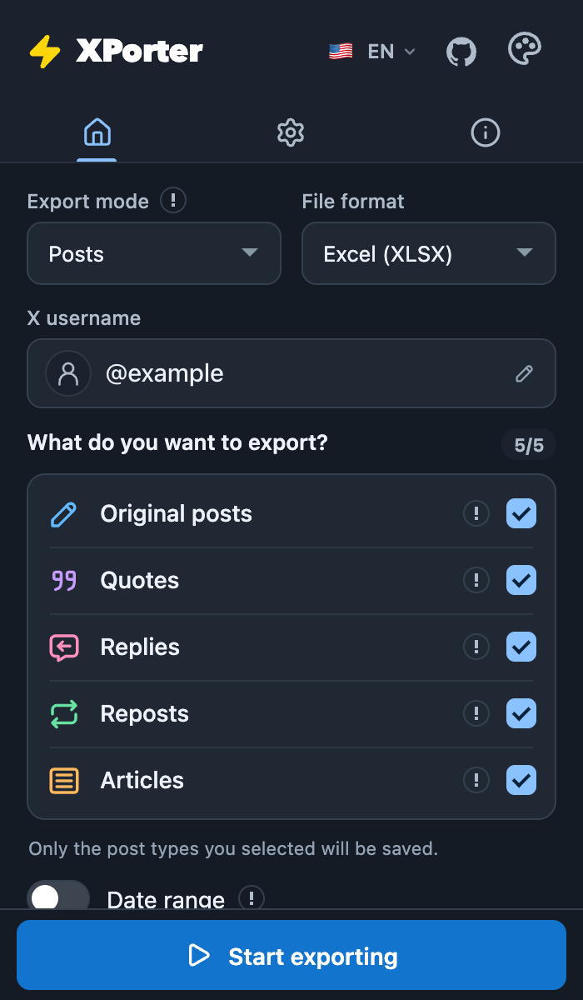
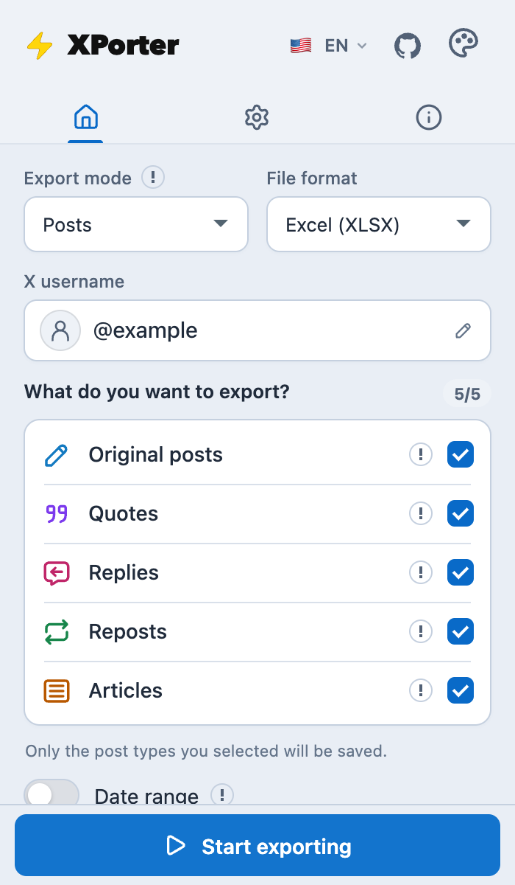

Посты
Текст, даты, ссылки, авторы и доступные метрики. Выбирай оригинальные посты, цитаты, ответы, репосты и статьи.
Подробная справка о продукте доступна на английском и русском. Остальные переводы интерфейса сохранены; обновлённые разделы без перевода показываются на английском.
Твои посты, закладки и аудитория. Сохрани данные X (Twitter) для работы в Excel, собственного анализа или следующего разговора с ИИ.
Работает с твоим аккаунтом X. Отдельная регистрация не нужна.
НОВОЕ В 2.0 · Темы, размер окна и текста


Пять режимов экспорта: сохрани содержимое ленты, закладки и списки аккаунтов вместе с полезными деталями.
Текст, даты, ссылки, авторы и доступные метрики. Выбирай оригинальные посты, цитаты, ответы, репосты и статьи.
Сохрани посты из закладок своего аккаунта X вместе с текстом, авторами и ссылками. Собери архив для чтения, поиска и новых идей.
Выгрузи подписчиков, подписки или верифицированных подписчиков: ники, описания, ссылки на профили и доступные сведения об аккаунтах.
Фильтруй посты по типам и датам. Даты учитывают часовой пояс браузера; результат зависит от доступности постов в поиске X.
Останови сбор, скачай полученные данные и продолжи совместимую сохранённую сессию.
14 языков расширения, светлые и тёмные темы, настройки размера окна и текста.
Доступность данных и скорость сбора зависят от X. Удалённые посты, ограничения доступа и лимиты запросов по-прежнему учитываются.
Лёгкая таблица для Excel, Google Таблиц и быстрого сравнения данных.
Книга Excel. По желанию — превью фотографий на отдельном листе Media.
Структурированные записи для Python, JavaScript и собственных инструментов анализа.
Читаемый текст для заметок или ИИ-инструмента. Доступен для выгрузок с постами.
Установи расширение из Chrome Web Store и используй свой текущий аккаунт X. Отдельный аккаунт XPorter не нужен.
Добавь XPorter в Chrome, открой x.com и войди в аккаунт там. Открой расширение на панели браузера.
Укажи ник профиля для постов и списков аккаунтов. В режиме закладок используется текущий аккаунт X.
Выбери режим и формат. При необходимости задай типы постов, лимит строк или диапазон дат, если режим это поддерживает.
Запусти сбор, следи за прогрессом и сохрани файл. Для экспорта по датам оставь вкладку поиска открытой. Большие выгрузки могут сохраняться пронумерованными частями.
Файлы создаются в браузере. XPorter не загружает содержимое выгрузки на свой сервер и не отправляет его ИИ-сервисам.
XPorter создаёт файлы в браузере и не загружает их содержимое на свой сервер. Запросы используют твою сессию X. В версии 2.0.0 диагностика во время работы остаётся локально. При открытии страницы после удаления отправляется ограниченная диагностика продукта; добровольный отзыв содержит то, что ты сам отправишь. Случайный идентификатор установки связывает отчёты, поэтому они псевдонимные, а не гарантированно анонимные.
Расширение также хранит локальную базу постов без ответов, которые X уже загрузил при просмотре ленты. Для этой базы не выполняются дополнительные запросы сбора; её можно выгрузить или очистить в настройках. Содержимое экспорта и данные авторизации X не входят в автоматическую диагностику при удалении.
Да. Нет подписки, оплаты за экспорт или платного тарифа XPorter. При этом остаются лимиты запросов X, ограничения поиска и лент, а также ресурсы браузера.
Нет. XPorter использует аккаунт X, в который ты уже вошёл в браузере. Расширение не просит пароль от X и не требует отдельной регистрации.
Полнота не гарантируется. X может ограничить ленту и поиск, вернуть меньше аккаунтов, чем указано в профиле, или прервать запрос. Можно сохранить частичный результат и продолжить сбор, если сохранённая сессия поддерживает возобновление.
X ограничивает количество запросов. XPorter учитывает доступные сведения о квоте и повторяет часть временно неудачных запросов. Быстрый режим не снимает эти ограничения. При остановке сохрани собранные строки и посмотри сообщение статуса перед повтором.
Выгрузки постов содержат доступные ссылки на медиа. В XLSX можно добавить ограниченные превью фотографий на лист Media, разрешив доступ к серверу изображений. Это не полный архив фото и видео в исходном качестве.
Нет. TXT упрощает чтение и повторное использование выгрузки. Копирование или загрузка файла в ИИ-сервис — отдельное действие по твоему выбору, с учётом политики этого сервиса.
XPorter распространяется через Chrome Web Store для настольного Chrome. Другие браузеры на Chromium могут поддерживать расширение, но совместимость и правила установки различаются. Это не мобильное приложение X.
Напиши через Telegram, email или GitHub по ссылкам внизу. Укажи версию расширения, режим экспорта и видимую ошибку. Не отправляй пароли, cookies и приватное содержимое выгрузки.
Историческая статистика недельных пользователей Chrome Web Store по 16 июля 2026 года. Сценарии ниже рассчитаны по этому снимку и не отражают текущее число пользователей.
Только агрегированные данные. Даты и число недельных пользователей — без личностей, аккаунтов и экспортированного контента X.
Снимок: 511 недельных пользователей на 16 июля 2026 года.
Не удалось загрузить данные о росте.
Архив сохранён для прозрачности. Диапазон сценариев — не доверительный интервал и не обещание будущего роста.
Бесплатная установка, без API-ключа. Начни со своей первой выгрузки.
Установить XPorter в Chrome